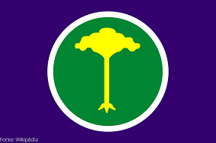
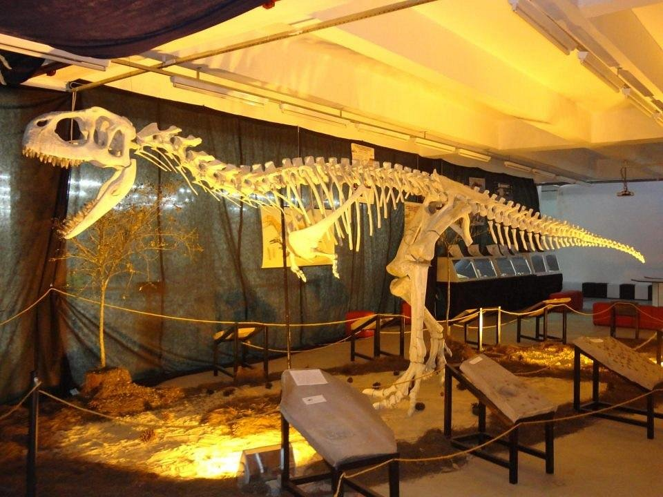
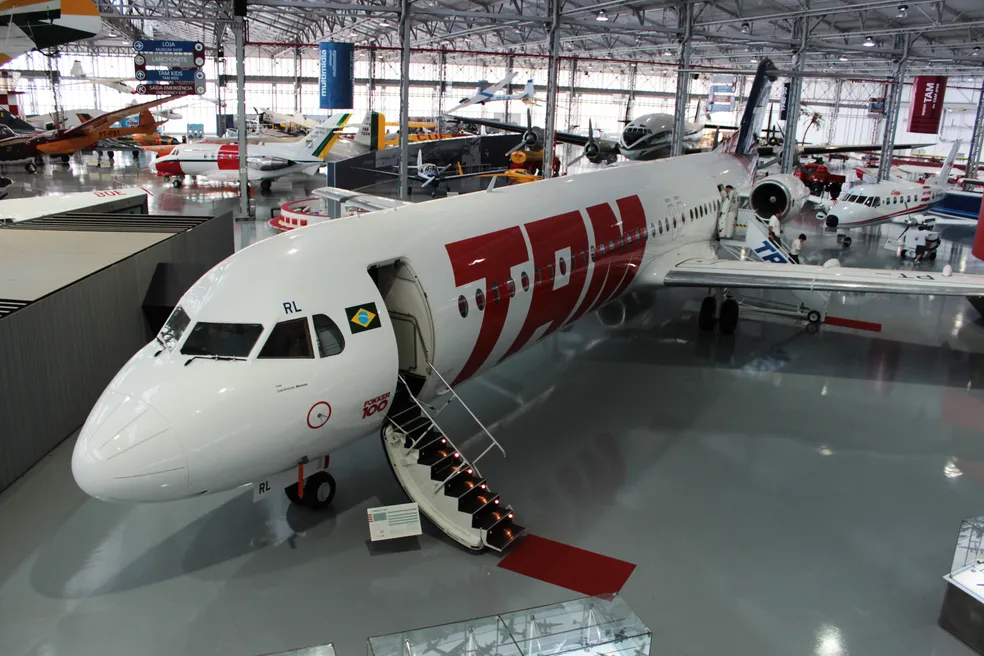
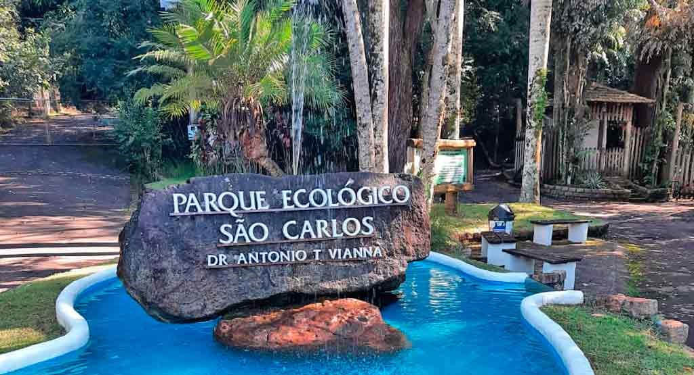
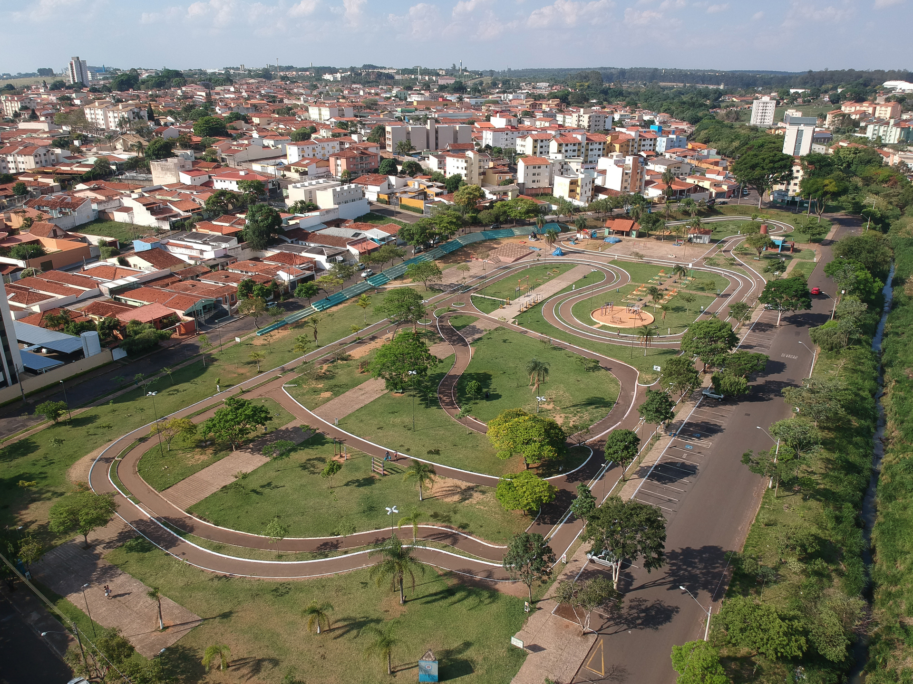
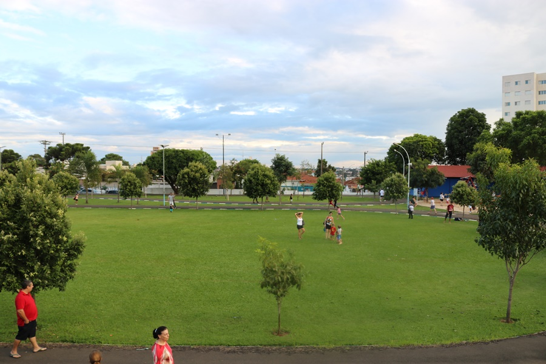

São Carlos, Interior de São Paulo
São Carlos é uma cidade localizada no interior do estado de São Paulo, Brasil. Conhecida por sua rica história, cultura vibrante e belas paisagens, São Carlos oferece uma variedade de pontos turísticos para os visitantes explorarem. A cidade é famosa por sua universidade, a Universidade de São Paulo (USP), que atrai estudantes e pesquisadores de todo o país. Além disso, São Carlos possui uma série de museus, parques e áreas verdes que proporcionam aos visitantes uma experiência única. Entre os pontos turísticos mais populares estão o Museu de Ciência Prof. Mário Tolentino, o Parque Ecológico de São Carlos e o Campo do Rui (FESC). Com sua combinação de cultura, natureza e história, São Carlos é um destino imperdível para quem deseja conhecer o interior paulista.
Museus
Museu de Ciência Prof. Mário Tolentino
O Museu de Ciência Prof. Mário Tolentino é um espaço dedicado à divulgação científica e tecnológica. Ele oferece exposições interativas, atividades educativas e eventos relacionados à ciência, atraindo visitantes de todas as idades.

Museu Pro-Memória
O Museu do Pró-Memória é um espaço dedicado à preservação e divulgação da história local. O museu apresenta exposições sobre a vida e o trabalho dos habitantes de São Carlos ao longo do tempo. Pena que está sempre fechado
Museu da Tam
O Museu da Tam é um espaço dedicado à preservação e divulgação da história local. O museu apresenta exposições sobre a vida e o trabalho dos habitantes de São Carlos ao longo do tempo.

Parques e áreas verdes
Parque Ecológico de São Carlos
O Parque Ecológico de São Carlos é um espaço verde que oferece trilhas, áreas para piquenique, playgrounds e um lago. É um local ideal para atividades ao ar livre, como caminhadas, ciclismo e observação da natureza.

Parque do Kartódromo
O Parque do Kartódromo é um espaço dedicado ao lazer e à prática de esportes. Ele conta com uma pista de kart, áreas para caminhada e eventos esportivos, sendo um ponto de encontro para os amantes de atividades físicas.

Campo do Rui (FESC)
O Campo do Rui (FESC) é um espaço de lazer e cultura que oferece áreas para atividades ao ar livre, como quadras esportivas, playgrounds e áreas para piquenique. O campo também é palco de eventos culturais e esportivos, proporcionando um ambiente agradável para a comunidade.
